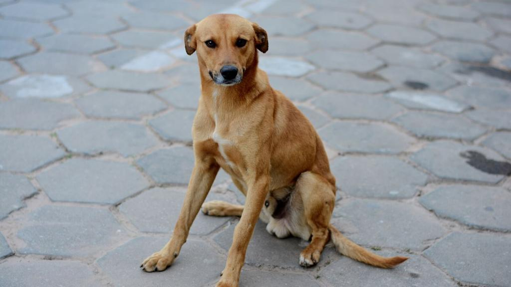

SRD (Vira-lata)

O termo SRD significa "Sem Raça Definida" e representa a maioria dos cães do Brasil. Resultado do cruzamento espontâneo entre diversas raças, o vira-lata é reconhecido por sua rusticidade, inteligência e forte vínculo afetivo com humanos.
Ouça o latido
Veja o em ação
Características
Os vira-latas são extremamente adaptáveis e resistentes, com características físicas e de temperamento que variam bastante de cão para cão, já que não seguem um padrão fixo de raça.
Apesar de não terem padrão definido pela CBKC, os vira-latas caramelo já são reconhecidos culturalmente como símbolo canino brasileiro.
Nível de energia:
Facilidade de adestramento:
"O vira-lata carrega em si a força da diversidade: cada um é único, com sua própria mistura de histórias e raças."
— Manual Brasileiro de Raças Caninas
Você sabia?
Por muito tempo o vira-lata foi visto como
um cão de menor valor ou sem qualidade um cão
tão saudável, leal e capaz quanto qualquer raça definida,
sendo hoje cada vez mais valorizado e adotado no Brasil.
Curiosidade sobre o Vira-lata
Em 2019, o vira-lata caramelo foi reconhecido pela Assembleia Legislativa de São Paulo como parte do patrimônio cultural do estado, símbolo de afeto e identidade brasileira.